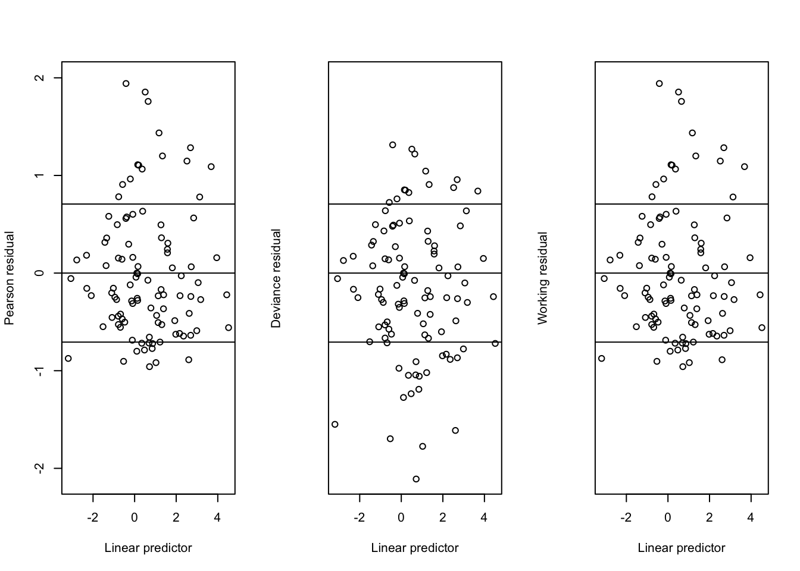

Continuing where we left off in Chapter 3 of Wood (2017), we begin with a discussion of residuals in GLMs.
Residuals
At the beginning of Section 3.1.7, we get the following statement:
Model checking is perhaps the most important part of applied statistical modelling. In the case of ordinary linear models it is based on examination of the model residuals, which contain all the information in the data not explained by the systematic part of the model. Examination of residuals is also the chief means for model checking in the case of GLMs, but in this case the standardization of residuals is both necessary and a little more difficult.
Wood goes on to explain why. When you plot the residuals from an ordinary linear model, you are usually hoping to find that their spread is roughly constant with respect to whatever you happen to be plotting on the x-axis–some covariate in the model, the fitted values, the index in which the data appears, etc. This is the so called assumption of “homoscedasticity”–a Greek word meaning constant spread–made by the model. In contrast, because non-normal GLMs imply a non-constant mean-variance relationship, the appearance of constant spread in the raw residuals \(Y_i - \hat{\mu}_i\) from a non-normal GLM would in fact be a bad sign, indicating a violation of your model’s assumptions. As Wood explains (and as we discussed in the last post), each distribution that is used for GLMs–Poisson, binomial, Gamma, etc.–has a different function \(V\) that captures the mean-variance relationship via the equation \(\mathop{\mathrm{Var}}(Y) = \phi V(\mathbb{E}(Y))\). Thus, when performing model checking for a GLM, you hope to find that the variance of your raw residuals varies with respect to the fitted values according to the function \(V\) specific to the distribution assumed by your GLM. As it turns out, this is a difficult thing to eyeball. However, if you standardize these raw residuals in such a way so that the standardized residuals would have constant spread if and only if the assumed mean-variance relationship held, then you can plot these standardized residuals and check for constant spread, which is the assessment one has to make in the ordinary case and is much easier.
There are two types of standardized residuals discussed by Wood: the Pearson residuals and the deviance residuals. Here are their definitions:
\[ \begin{aligned} \hat{\epsilon}_i^p &= \frac{y_i - \hat{\mu}_i}{\sqrt{V(\hat{\mu}_i)}} \\ \hat{\epsilon}_i^d = \text{sign}(y_i - \hat{\mu_i})\sqrt{d_i} &= \text{sign}(y_i - \hat{\mu_i})\sqrt{2\phi\{l_i^{\text{max}} - l_i(\hat{\beta})\}} \end{aligned} \tag{1}\]
These two types of residuals form the basis for the the two estimates of \(\phi\) discussed in Part 1: the sum of squared Pearson residuals gives the Pearson statistic, and the sum of squared deviance residuals gives the deviance.
Let’s see what they look like for the Poisson regression from the first post.
What’s the deal with the streaks?
They are an artifact of the fact that the response \(Y\) is discrete! Each streak corresponds to the data points with a given value of \(Y\), e.g. \(Y=0, 1, etc.\). Modulo the streaks, however, we see no trend in the spread of either the Pearson and deviance residuals with respect to the linear prediction, validating the mean-variance relationship assumed by the fitted Poisson GLM. In addition, we observe that the Pearson residuals are distributed somewhat more asymmetrically about \(0\) with some positive skew, whereas the deviance residuals are more symmetric.
In addition to these two types of residuals described by Wood, there are also the working residuals, defined by
\[ r_W = g'(\hat{\mu})(y-\hat{\mu}) \tag{2}\]
From Equation 1 and Equation 2, we can see that the working residuals coincide with the Pearson residual whenever
\[ g'(\mu) = \frac{1}{\sqrt{V(\mu)}} \]
If this property holds, we say that the link function \(g\) is variance stabilizing for the distribution of \(Y\). Where this comes from is that if we were to directly apply the transformation \(g\) to the responses \(Y\), assumed to follow a distribution such that \(\Var(Y) \propto V(\E(Y))\), then it can be shown using the Delta method that the transformed responses \(g(Y)\) would have constant variance, i.e. \(\Var(g(Y)) \propto 1\). Of course, when using a GLM, we do not directly transform the responses, but instead model the transformed means, so this property is not something we really care about.
The Gamma distribution with log-link that we used in the previous post is one example where the property holds:

Our plots include horizontal lines at \(\pm \sqrt{\phi}\), which should be the approximate standard deviation of these standardized residuals. We see that the working and Pearson residuals are identical. As with the previous example, the Pearson residuals have positive skew, whereas the deviance residuals are more symmetric.
Quasi-likelihood
Consider an observation \(y_i\) of a random variable with mean \(\mu_i\) and variance \(\phi V(\mu_i)\). The log quasi-likelihood for \(\mu_i\) given this observations is defined to be \[ q_i\left(\mu_i\right)=\int_{y_i}^{\mu_i} \frac{y_i-z}{\phi V(z)} d z \]
This is quite an interesting function. Its derivative is in fact the score function for the exponential family whose mean-variance relationship is characterized by \(V\). For example, for \(V(z)=1\), we have that
\[ \int_{y_i}^{\mu_i} \frac{y_i-z}{\phi} dz = -\frac{(y_i - \mu_i)^2}{2\phi} \] is, up to an additive constant not depending on \(\mu_i\), the log-likelihood for \(\mu_i\) from an observation of \(y_i \sim N(\mu_i, \phi)\), the exponential family whose mean-variance relationship is constant. Similarly, for \(V(z)=z\), we have
\[\begin{align} \int_{y_i}^{\mu_i} \frac{y_i-z}{\phi z} dz &= \frac{1}{\phi}\left[y_i\log(z) - z\right]_{z=y_i}^{z=\mu_i} \\ &= \frac{y_i\log(\mu_i) - \mu_i}{\phi} + C \end{align}\] is, up to an additive constant not depending on \(\mu_i\), the log-likelihood for \(\mu_i\) from an observation of \(y_i \sim \text{Pois}(\mu_i)\) if we set \(\phi\) to 1.
It turns out that an estimator formed by maximizing with respect to \(\bbeta\) the sum of these \(q_i\) over the observations \(i\), which we will term the maximum quasi-likelihood estimator, has good properties even when the response is not distributed according to the corresponding exponential family, but has some other distribution instead, as long as its mean \(\mu\) is correctly specified in the quasi-likelihood function.
First, if the variance function \(V\) specified in the quasi-likelihood function \(q\) happens to be correct (i.e. we indeed have \(\Var(Y) = \phi V(\mu)\), where \(\phi\) can be unknown), then not only will the maximum quasi-likelihood estimates be consistent, they will also be relatively efficient (despite the fact that no distribution for \(Y\) is assumed). Furthermore, in terms of uncertainty and hypothesis testing, a lot of the asymptotic machinery from the likelihood-theory will carry over and apply directly to \(q\), such that standard errors of maximum quasi-likelihood estimates are available and hypothesis tests can be performed.
Second, something not mentioned by Wood, but is super cool in my opinion: the maximum quasi-likelihood estimator is consistent if the expected value \(\mu\) is right even if the variance function is wrong, i.e. \(\Var(Y) \neq \phi V(\mu)\). This is quite a strong result, and a corollary is that, because, as previously noted, the log-likelihood of exponential families coincides (up to an additive constant) with a log quasi-likelihood for some \(V\), estimates from GLMs are consistent even if you choose a distribution for your response with the wrong mean-variance relationship. Of course, it’s not too difficult to use the standardized-residual checking from the last section to choose the distribution with the correct mean-variance relationship. Still, it’s interesting that we still get consistency if we choose incorrectly.
To illustrate, this means that in our working examples where we used the log-link to generate both Poisson distributed responses and Gamma distributed response, we could fit the Poisson GLM to the Gamma distributed responses or the Gamma GLM to the Poisson distributed responses, and despite this mistake, (so long as we specify log-links) get estimates \(\hat{\beta}\) which in the large sample limit converge to the true \(\beta\).
To recap, it makes sense to view this maximum quasi-likelihood theory as a justification for fitting GLMs. Namely, this theory suggests that the estimates from a GLM are robust in a strong sense to the assumed distribution being incorrect but having the right mean-variance relationship–in this case, the estimates will not only be consistent but be relatively efficient–and in a weak sense to the assumed distribution being one with an incorrect mean-variance relationship–in this case, the estimates will be consistent although not efficient. Quasi-likelihood theory generalizes likelihood theory in a way that is analogous to how ordinary least squares theory generalizes normal distribution theory in ordinary linear models: it provides a justification for an existing, commonly used estimator even when the assumptions that motivated the existing estimator are unlikely to hold.
This theory is in particular useful for count data. Oftentimes count data is over-dispersed with the form \(\Var(Y) = \phi \E(Y)\). Based on the above theory, we can see that despite the non-equality of mean and variance, fitting a Poisson model will yield efficient estimates of \(\bbeta\) as long as you get the link function right (usually the link in this case is assumed to be log) because these estimates are quasi-maximum likelihood estimates for \(V(z) = z\). Of course, in this case, one can and should estimate \(\phi\) for hypothesis testing and inference and not assume that it’s equal to 1. If the variance is not proportional to the mean, but has some other relationship, then fitting a Poisson model will still produce consistent estimates if you get the link function right, although so will fitting any other GLM with the right link function.
Negative binomial models
Another possibility for this last scenario discussed is to fit a negative binomial model for which the mean-variance relationship is given by \(\Var(Y) = \E(Y) + \E(Y)^2/\theta\) for some unknown \(\theta\).
Unfortunately, as opposed to the Poisson GLM, whose score function coincides with the derivative of the log quasi-likelihood \(q\) with \(V(z) = z\), the score function for the negative binomial distribution with this parameterization does not coincide with the derivative of a log quasi-likelihood for any \(V(z)\). For this reason, estimates from negative binomial models are not robust when the mean-variance relationship is not given by \(\Var(Y) = \E(Y) + \E(Y)^2/\theta\).
On the other hand, the negative binomial distribution for a count outcome can be useful if you are doing a Bayesian analysis because in this case you are forced to use a likelihood (I don’t believe quasi-likelihood can be incorporated into the Bayesian set-up). In the case of over-dispersed count data, the negative binomial distribution is a pretty good choice.
References
Wood, Simon N. 2017. Generalized Additive Models: An Introduction with r. chapman; hall/CRC.